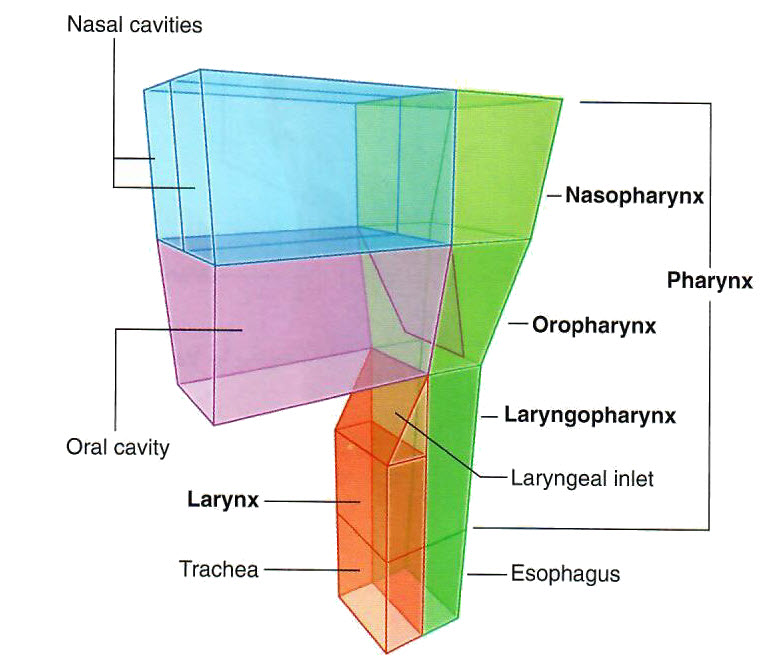

GAS 1 Lab 2: Pharynx and Larynx
OBJECTIVES:GAS1.2.1 Describe the boundaries of the nasopharynx. GAS1.2.2 Identify the structures of the nasopharynx. GAS1.2.3 Describe the nasopharyngeal muscles and the function of those muscles. |
READINGS:Moore (Eighth Edition): Clinically Oriented Anatomy Pages: 963-973. |
Pharynx and Larynx: Module 1 - Page 1 of 4
The nasal cavity is related to the nasopharynx, oral cavity, oropharynx and the laryngopharynx in the following manner.
| Begin with the skull. |
Find the frontal, maxillary and ethmoid sinuses in the cross sections of the MPR window.
Remember that all of these sinuses drain into the nasal cavity.
What duct drains into the nasal cavity? |
|
|
The lacrimal duct. |
|
Into what structure does the sphenoid sinus drain? |
|
|
The upper nasal cavity. |
|
Now we will begin to look at the nasopharynx in structure and function.
| Remove parts of the skull to expose just the pharyngeal areas on the left side of the skull. . |
Using the Draw tool, identify the:
What bones form the hard palate? |
|
|
Maxilla Palatine |
|